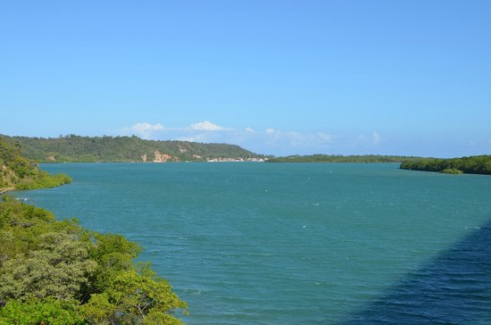
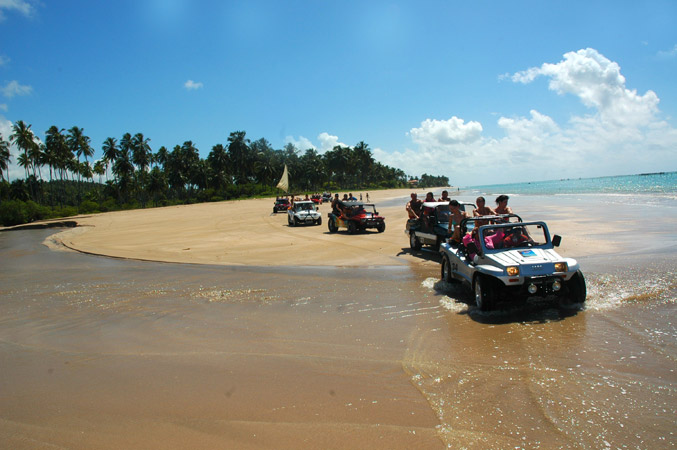
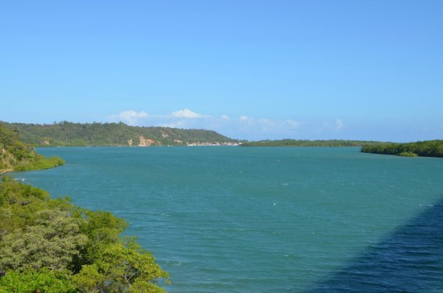
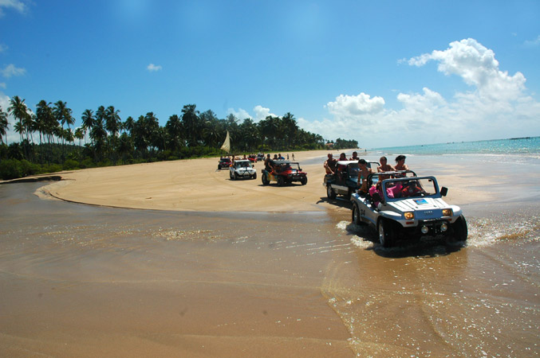

Sobre a Praia do Gunga
Localizada no município de Roteiro, a Praia do Gunga é um verdadeiro paraíso natural, considerada uma das mais bonitas do Brasil.
Com suas águas cristalinas, areia branca e fina, coqueiros a perder de vista e falésias coloridas, a praia oferece um cenário
paradisíaco para quem busca relaxar e aproveitar a beleza da natureza.
Como Chegar
A Praia do Gunga está localizada a cerca de 90 km de Maceió, capital de Alagoas. O acesso à praia pode ser feito de carro, através
da BR-101 Sul, ou de buggy, passeio que permite apreciar as belezas da região.
O que Fazer
A Praia do Gunga oferece diversas opções de lazer para seus visitantes, desde relaxar na areia e nadar nas águas cristalinas até
praticar esportes náuticos como stand up paddle, caiaque e kitesurf. Também é possível fazer passeios de buggy pelas dunas e falésias,
visitar a Lagoa do Roteiro e apreciar a culinária local nos restaurantes da praia.
Dicas
Leve protetor solar, chapéu e óculos escuros, pois o sol é forte na região.
Use roupas leves e confortáveis, pois você vai passar o dia na praia.Leve dinheiro em espécie, pois nem todos os lugares aceitam cartão.
Beba bastante água para se manter hidratado.
Respeite o meio ambiente e não deixe lixo na praia.
Galeria
 


